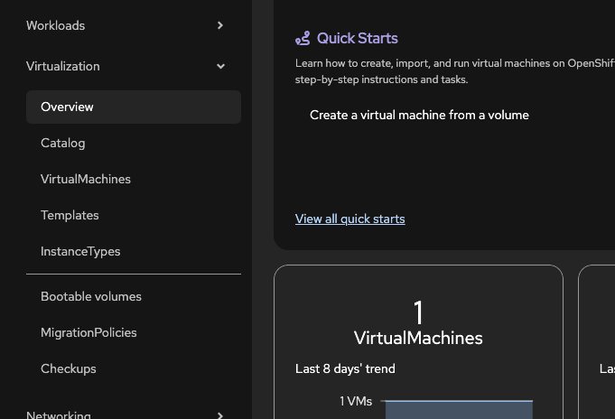

Using virtctl for VM Management
Overview
The virtctl CLI tool provides commands for managing virtual machines in OpenShift Virtualization. This guide covers essential VM operations.
Versions tested:
OpenShift 4.20
Downloading and Installing virtctl
The virtctl CLI tool can be downloaded directly from the OpenShift web console.
-
In the OpenShift web console, navigate to Virtualization → Overview in the left sidebar.

Figure 1. Virtualization Overview in the OpenShift console -
In the upper right corner of the Overview page, click the Download the virtctl command-line utility link.
 Figure 2. Download virtctl link
Figure 2. Download virtctl link -
On the download page, select the appropriate
virtctlbinary for your operating system and architecture. Figure 3. Available virtctl binaries
Figure 3. Available virtctl binaries -
After downloading, make the binary executable and move it to your PATH:
# Linux/Mac chmod +x virtctl sudo mv virtctl /usr/local/bin/ # Verify installation virtctl versionFor Windows, extract the executable and add its location to your system PATH.
Essential Commands
Listing VMs
Before managing VMs, list what’s available in your cluster using the oc command:
# List all VMs in a specific namespace
oc get vm -n myapp
# List all VMs across all namespaces
oc get vm -AExample output:
NAMESPACE NAME AGE STATUS READY
myapp fedora-app-vm 13d Running TrueTo see running VM instances (VMIs) with additional details like IP address and node placement:
oc get vmi -AExample output:
NAMESPACE NAME AGE PHASE IP NODENAME READY
myapp fedora-app-vm 13d Running 10.128.1.225 ocplab01 True
Use oc for listing and querying VMs. Use virtctl for VM operations like start, stop, and console access.
|
VM Lifecycle
Start, stop, and restart VMs:
# Start a VM
virtctl start fedora-app-vm -n myapp
# Stop a VM
virtctl stop fedora-app-vm -n myapp
# Restart a VM
virtctl restart fedora-app-vm -n myappAccessing VMs
Connect to your VM:
# Console access (press Ctrl+] to exit)
virtctl console fedora-app-vm -n myapp
# SSH access (requires SSH configured)
virtctl ssh user@fedora-app-vm -n myapp
# VNC access
virtctl vnc fedora-app-vm -n myappVM Information
Get VM details (requires QEMU guest agent installed in the VM):
# Guest OS information
virtctl guestosinfo fedora-app-vm -n myappExample output:
{
"guestAgentVersion": "10.1.0",
"hostname": "fedora-app-vm",
"os": {
"name": "Fedora Linux",
"kernelRelease": "6.5.6-300.fc39.x86_64",
"version": "39",
"prettyName": "Fedora Linux 39 (Cloud Edition)",
"versionId": "39",
"kernelVersion": "#1 SMP PREEMPT_DYNAMIC",
"machine": "x86_64",
"id": "fedora"
}
}# List filesystems
virtctl fslist fedora-app-vm -n myappExample output shows mounted filesystems with usage:
{
"items": [
{
"diskName": "vda2",
"mountPoint": "/boot/efi",
"fileSystemType": "vfat",
"usedBytes": 21723136,
"totalBytes": 104607744
},
{
"diskName": "vda3",
"mountPoint": "/boot",
"fileSystemType": "ext4",
"usedBytes": 91316224,
"totalBytes": 1902895104
},
{
"diskName": "vda4",
"mountPoint": "/",
"fileSystemType": "btrfs",
"usedBytes": 687783936,
"totalBytes": 29525868544
}
]
}# List logged-in users
virtctl userlist fedora-app-vm -n myappFile Transfer
Copy files to and from VMs using virtctl scp. This requires SSH to be running in the VM and one of the following authentication methods:
-
SSH key (recommended): Your public key must be in the VM’s
~/.ssh/authorized_keys -
Password: The VM must have password authentication enabled in SSH
# Copy to VM (uses default SSH key)
virtctl scp local-file.txt fedora@fedora-app-vm:/tmp/remote.txt -n myapp
# Copy from VM
virtctl scp fedora@fedora-app-vm:/tmp/remote.txt ./local.txt -n myapp
# Specify a different SSH key
virtctl scp -i ~/.ssh/my_key local-file.txt fedora@fedora-app-vm:/tmp/ -n myapp
If SSH is not configured, use virtctl console to access the VM first and set up SSH keys.
|
To inject your SSH key when creating the VM, include it in the cloud-init configuration:
#cloud-config
user: fedora
ssh_authorized_keys:
- ssh-rsa AAAAB3NzaC... your-key-hereFor detailed SSH configuration options, see Remote Access to Linux VMs.
Verifying VM Operations
After starting or stopping a VM, verify the operation:
# Check VM status
oc get vm fedora-app-vm -n myappExample output after successful start:
NAME AGE STATUS READY
fedora-app-vm 7d3h Running True# Check VMI (running instance)
oc get vmi fedora-app-vm -n myappExpected: VMI listed when running, no VMI after stop.
Quick Reference
When to use each access method:
-
virtctl console- Text-only terminal access, works without network -
virtctl ssh- Convenient SSH when you have keys configured -
virtctl vnc- Graphical desktop access for GUI-based VMs
When to check VM information:
-
virtctl guestosinfo- Verify OS version before updates -
virtctl fslist- Check disk space before installing software -
virtctl userlist- See who is currently logged in
Common Issues
Issue: Unable to connect to the server
Solution: Verify cluster access:
oc whoami
oc get nodesIssue: Guest agent commands return no data
Solution: Install the QEMU guest agent in your VM. See Installing the QEMU guest agent for installation instructions.
Issue: SSH/SCP commands fail
Solution: Verify SSH is configured in the VM. Use console to check:
# Access via console first
virtctl console fedora-app-vm -n myapp
# Inside VM, check SSH status
systemctl status sshdIssue: Console hangs or is unresponsive
Solution: Exit with Ctrl+] and verify VM status:
oc get vmi fedora-app-vm -n myappBest Practices
-
Always specify namespace with
-nto avoid confusion -
Use console for initial setup, then SSH for regular access
-
Install guest agent in all VMs for full functionality
-
Use
ocfor VM status,virtctlfor VM operations -
Exit console properly with
Ctrl+]to avoid hung sessions -
Test with
virtctl sshbefore setting up external access
See Also
-
Remote Access to Linux VMs - All VM access methods